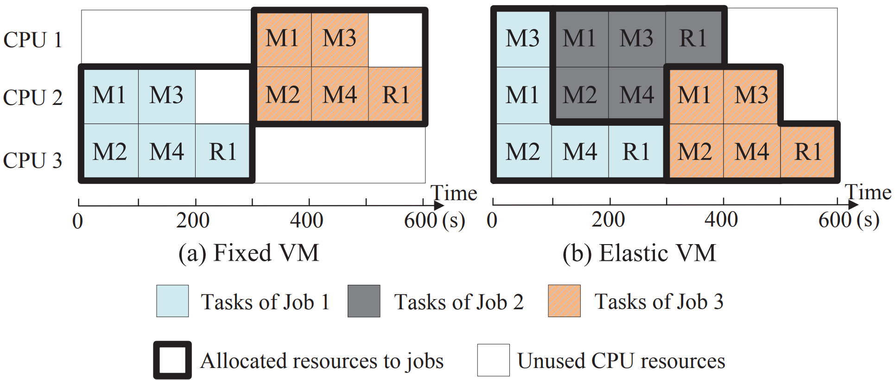
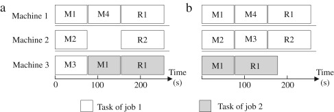
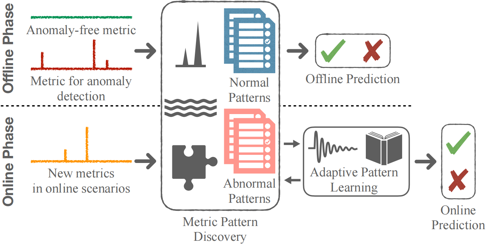
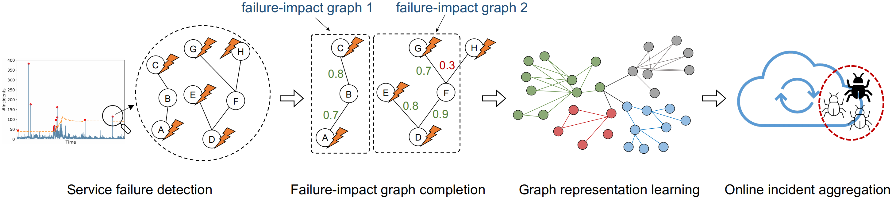
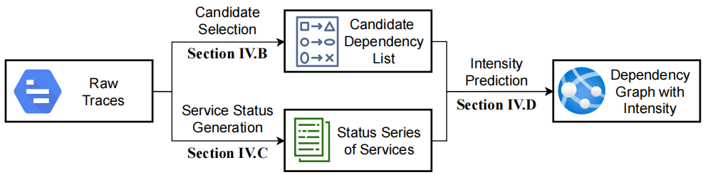
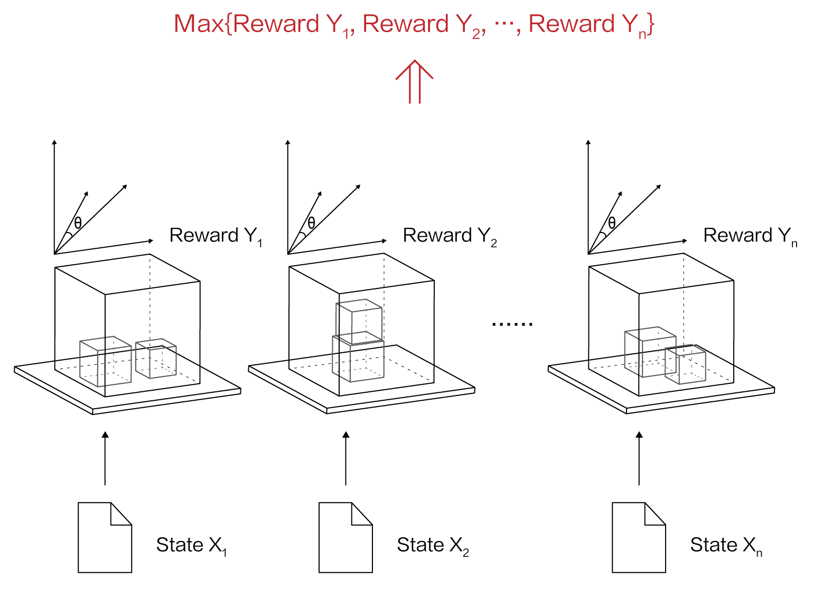
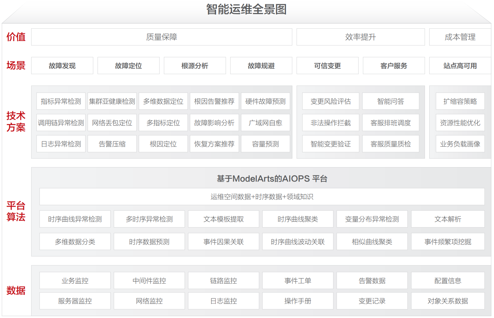
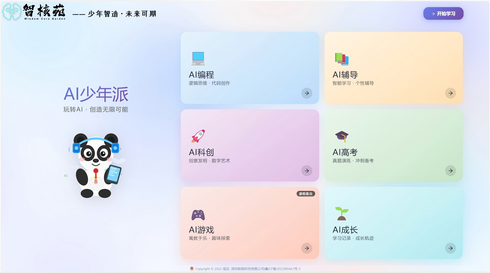
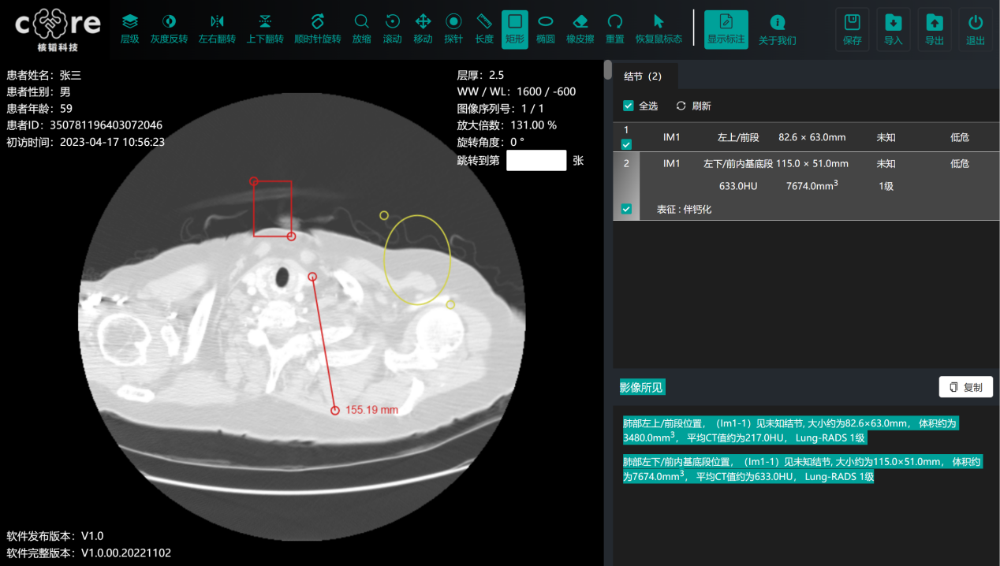

I am a Ph.D. in Computer Science from Tsinghua University with 10+ years of experience in AI research, development, and industrialization. As a former Technical Expert at Huawei Cloud and current AI Entrepreneur & Visiting Professor, I specialize in bridging cutting-edge AI research with real-world enterprise applications. My expertise spans cloud resource scheduling, AIOps, and large language models (LLMs), having led projects that generated over 200 million RMB in value and served dozens of enterprises across manufacturing, energy, and finance sectors.
Currently, my work focuses on the research and practical application of advanced generative AI technologies (AIGC), with particular emphasis on enterprise AI strategy consulting, LLM fine-tuning (LoRA/P-Tuning), and RAG-enhanced knowledge retrieval systems for vertical industries. If you are interested in Academic Collaboration or Enterprise AI Solutions, feel free to reach out via email at lxcernet@gmail.com.
I began my academic journey in 2012 at Tsinghua University, where I studied Computer Science and Technology under the guidance of Prof. Jiahai Yang (杨家海). My research focused on cloud computing, resource optimization, and big data analytics at the Institute of Network Science and Cyberspace. In 2017, I earned my Ph.D. degree, being recognized as an Outstanding Graduate (Top 1%) and awarded the prestigious National Doctoral Scholarship (Top 1%) in 2016. During my doctoral studies, I spent two years (2014-2016) as a Research Assistant at The Hong Kong Polytechnic University, working under Prof. Dan Wang (王丹) on optimization and resource scheduling. I have published papers in top-tier conferences and journals, including ICSE (CCF-A), ASE (CCF-A), IWQoS (CCF-B), JPDC (CCF-B), and HPCC (CCF-C).
I worked for five years at Huawei Cloud Innovation Lab (华为云创新实验室), where I led teams specializing in intelligent resource scheduling and AIOps for Huawei Cloud’s global infrastructure. I managed the Alkaid Project, an intelligent scheduling platform handling 10+ million daily requests across 30+ global data centers and 2+ million servers. I also established a 10 million RMB joint laboratory with CUHK for AIOps research. During my tenure, I was honored with Huawei’s highest accolades: the Individual Gold Medal Award (Top 1%) in 2019 and the Team Gold Medal Award (Top 1%) in 2020.
Currently, I serve as the Founder & CEO of HeTao Technology Co., Ltd. (核韬科技), a company dedicated to implementing enterprise-grade AI solutions, including private LLM deployment and low-code AI agent platforms. I am also the founder of Wisdom Core Garden (智核苑), China’s first national AI education platform for K-12 students. In 2025, I was appointed as a Visiting Professor at the School of Artificial Intelligence, Fujian Normal University, and co-founded HeTao Technology (Wenzhou) as the national marketing center for enterprise AI solutions.
📝 Publications
☁️ Cloud Computing

Tetris: Optimizing cloud resource usage unbalance with elastic VM
X Ling, Y Yuan, D Wang, J Yang
- Tetris is an elastic VM strategy based on cloud system that can better optimize resource utilization to support big data applications.
- We evaluate Tetris on a real private cloud platform using Facebook trace and Wikipedia dataset. With Tetris, the cloud system can accommodate 31.3% more jobs.

Joint scheduling of MapReduce jobs with servers: Performance bounds and experiments
X Ling, Y Yuan, D Wang, J Liu, J Yang
- We formulate the MapReduce server-job organizer problem (MSJO) and show that it is NP-complete.
- We propose a 3-approximation algorithm and a fast heuristic design to address the MSJO problem.
-
HPCC 2016 (CCF-C)Fast community detection in large weighted networks using graphx in the cloud, X Ling, J Yang, D Wang, J Chen, L Li -
ISCC 2016 (CCF-C)Load-aware hybrid scheduling in large compute clusters, D Fu, J Yang, X Ling, H Zhang -
HPCC 2015 (CCF-C)Cluster Scheduler on Heterogeneous Cloud, X Ling, J Yang, D Wang, Y Wang
⚙️ AIOps

Adaptive performance anomaly detection for online service systems via pattern sketching
Z Chen, J Liu, Y Su, H Zhang, X Ling, Y Yang, MR Lyu
- ADSketch is an interpretable and adaptive performance anomaly detection algorithm for online service systems.
- Academic Impact: ADSketch achieves interpretability by identifying groups of anomalous metric patterns, which represent particular types of performance issues.
- Industry Impact: ADSketch is evaluated with public data as well as industrial data collected from a representative online service system in Huawei Cloud.

Graph-based incident aggregation for large-scale online service systems
Z Chen, J Liu, Y Su, H Zhang, X Wen, X Ling, Y Yang, MR Lyu
- GRLIA is an incident aggregation framework based on graph representation learning over the cascading graph of cloud failures.

AID: efficient prediction of aggregated intensity of dependency in large-scale cloud systems
T Yang, J Shen, Y Su, X Ling, Y Yang, MR Lyu
- AID is the first approach to predict the intensity of dependencies between cloud services.
🔒 Patents (8 Granted)
- Title: Scheduling Method and Apparatus (一种调度方法及装置)
- No.: CN201811161060.6
- Inventors: Xiao Ling
- Grant Date: 2019-03-01
- Description: A scheduling method and apparatus to solve the problem of large job waiting latency and low efficiency in existing technologies.
- Title: Cloud Product Recommendation Method and Apparatus (云产品的推荐方法和推荐装置)
- No.: CN202011526847.5
- Inventors: Xiao Ling, Yanxiang Zeng
- Grant Date: 2022-07-08
- Description: A cloud product recommendation method and apparatus that improves the reliability of cloud product recommendations.
- Title: Fundus Image Recognition Method, Apparatus, Device and Storage Medium (一种眼底照片的图像识别方法、装置、设备及存储介质)
- No.: CN202211595444.5
- Inventors: Xiao Ling, Zhaoxiang Zeng, Kai Zhang
- Grant Date: 2023-03-21
- Description: A multi-level segmentation network for fundus image recognition, improving segmentation precision and classification accuracy for different targets.
- Title: Cloud Platform Resource Scheduling Method (云平台资源调度方法)
- No.: CN201310066039.9
- Inventors: Jiahai Yang, Cong Xu, Xiao Ling, Yuding Wang
- Grant Date: 2014-09-03
- Description: A cloud platform resource scheduling method that calculates the average load of servers when assigning tasks to server sets.
- Title: Resource Migration Method, System and Device (一种资源迁移的方法、系统及设备)
- No.: CN202110312058.X
- Inventors: Leiming Du, Shuming Jing, Xiao Ling
- Grant Date: 2021-09-10
- Description: A resource migration method for resource provisioning systems with multiple physical hosts containing various hardware resources.
- Title: Online Data Anomaly Detection Method, Apparatus, Storage Medium and Device (一种在线数据异常检测方法、装置、存储介质及设备)
- No.: CN202010236425.8
- Inventors: Yuxin Su, Rongcong Lyu, Xiao Ling
- Grant Date: 2021-10-01
- Description: An online data anomaly detection method to solve the problem of unknown value ranges in data to be detected.
- Title: Service Quality Prediction Method and Computing Device (一种预测服务质量的方法和计算装置)
- No.: CN202210609398.3
- Inventors: Xiaofeng Gao, Yunlong Cheng, Xiao Ling, Guihai Chen
- Grant Date: 2023-12-12
- Description: A method for predicting service quality and a computing device capable of implementing the method.
- Title: Storage Pool Hotspot Processing Method and Apparatus (一种存储池的热点处理方法及装置)
- No.: CN202011562831.X
- Inventors: Chunguang Li, Yongqiang Zeng, Song Ye, Xiao Ling, Shuming Jing, Leiming Du
- Grant Date: 2022-06-28
- Description: A storage pool hotspot processing method and apparatus in the storage technology field to improve hotspot processing effectiveness.
🧑💻 Software Copyrights (5 Registered)
- Title: AILeader One-Stop AI Education Platform (智核苑一站式AI教学平台)
- No.: 2024SR2114374
- Owner: Shenzhen HeTao Technology Co., Ltd.
- Grant Date: 2024-12-18
- Description: An AI education platform for K-12 students, integrating AI Programming, AI Tutoring, and AI Science & Innovation modules with block-based programming, learning assistants, AI art creation, and digital life features.
- Title: AILeader Digital Avatar Creation Platform (智核苑数字人创作平台DigitalAvatar)
- No.: 2024SR1155409
- Owner: Shenzhen HeTao Technology Co., Ltd.
- Grant Date: 2024-08-09
- Description: An application for rapid generation of audio and digital human videos based on user intent, with cloud-based AI generation.
- Title: AI Drawing City (爱画之城软件)
- No.: 2023SR0651719
- Owner: Shenzhen HeTao Technology Co., Ltd.
- Grant Date: 2023-06-14
- Description: A mini-program for rapid AI-powered drawing based on user intent.
- Title: CoreMI: Cloud-Based AI Medical Imaging Diagnosis System (基于云计算的AI医学影像辅助诊断系统CoreMI)
- No.: 2022SR1507070
- Owner: Shenzhen HeTao Technology Co., Ltd.
- Grant Date: 2022-11-16
- Description: A cloud-based medical imaging analysis software for patients, hospitals, and health centers, utilizing big data processing, feature engineering, and deep learning for automated AI film reading and diagnostic report generation, improving efficiency by 10,000x while reducing misdiagnosis rates.
- Title: Tsinghua Cloud IaaS Management Platform (清华云IaaS管理平台)
- No.: 2014SR0651374
- Owner: Jiahai Yang, Cong Xu, Xiao Ling, Hui Yu, Jianping Weng
- Grant Date: 2014-01-27
- Description: An Infrastructure-as-a-Service management platform for cloud computing resource orchestration and scheduling.
🛠️ Projects
🏢 Enterprise AI Solutions
Enterprise AI Integrated System (企业级AI一体机)
- [Role] Product Lead & Founder
- [Highlight] Next-generation AI infrastructure for enterprise digital transformation, innovatively integrating high-performance computing with AI agent technology. Supports private local deployment and low-code workflow agent development. Core philosophy: “Computing as a Service, Intelligence as Productivity.”
- [Architecture] Three-tier decoupled architecture: Computing Layer + Model Layer + Application Layer, enabling rapid deployment and flexible scaling of enterprise-grade AI capabilities.
- [Achievement] Successfully deployed to dozens of enterprises across manufacturing, new energy, finance, and legal sectors. Incubated multiple benchmark applications:
- AI-assisted CNC Programming System (60% efficiency improvement)
- Intelligent Power Trading Assistant (1000+ daily trading decisions)
- Legal Due Diligence Report Assistant (80% time reduction)
- Intelligent Patent Search Engine (95%+ recall rate)
- [Impact] Headquartered in Shenzhen (R&D) and Wenzhou (National Marketing Center), driving large-scale AI adoption in the real economy.
☁️ Cloud Computing

Alkaid - Huawei Cloud Intelligent Resource Scheduling Platform (华为云瑶光资源调度项目)
- [Role] Team Leader (15-person algorithm team)
- [Scale] Core infrastructure project handling 10+ million daily scheduling requests across 30+ global data centers and 2+ million servers.
- [Highlight] Built an end-to-end intelligent scheduling system with offline training, online inference, and real-time feedback. Developed elastic resource allocation model under multi-objective constraints, integrating LSTM time-series prediction with PPO reinforcement learning, achieving 98.5% scheduling accuracy with second-level decision-making for 100K+ node clusters.
- [Achievement] Improved average fragmentation rate by 30%, saved 6% of servers, extended defragmentation cycle by 50%.
- [Profit] Generated over 200 million RMB in revenue growth for Huawei Cloud IaaS.
⚙️ AIOps

AIOps - Huawei Cloud Intelligent Operations Platform (华为云智能运维项目)
- [Role] Project Manager
- [Highlight] Established a 10 million RMB joint laboratory with The Chinese University of Hong Kong (CUHK), with 10+ PhD researchers over 3 years. Built a millisecond-level closed-loop system for anomaly detection, root cause localization, and self-healing decisions.
- [Innovation] Developed “Spatio-temporal Feature Perception + Causal Reasoning Engine” dual-driven framework. Designed GNN-based service topology anomaly propagation model, solving cross-layer (IaaS/PaaS/SaaS) fault correlation analysis challenges.
- [Achievement] Achieved 98.7% multi-dimensional anomaly detection accuracy, reduced root cause localization time to seconds, supporting Huawei Cloud’s 99.99% SLA commitment.
- [Profit] Reduced annual O&M costs by 230 million RMB.
🤖 AIGC & Education

AILeader - One-Stop AI Education Platform (智核苑一站式AI教学平台)
- [Role] Founder
- [Highlight] China’s first one-stop AI education platform for K-12 students (ages 5-18). Integrates three core modules: AI Programming, AI Tutoring, and AI Science & Innovation. Features block-based programming, instruction-based programming, learning assistants, mock exams, AI art creation, and digital life modules.
- [Achievement] Pioneered AI enlightenment curriculum for Chinese youth. The innovative AI course system has been adopted by primary and secondary schools in Guangzhou, becoming a national “AI Science & Innovation” demonstration program.
- [Profit] AI course packages and platform subscriptions have generated over 2 million RMB in revenue. Enrolled 100+ students at the flagship Cuihu Branch in Tianhe District, Guangzhou.

HeTao AI Mini Program (核韬AI小程序)
- [Role] CTO
- [Highlight] Consumer-facing AI generation tool covering AI Q&A, dialogue, painting, portrait generation, and AI picture books.
- [Achievement] Accumulated 500,000 users with 3,000 daily active users. Obtained software copyright. Passed national internet information service algorithm filing review.
- [Profit] Advertising and premium subscriptions exceeded 1 million RMB in revenue.
🏥 Medical AI

CoreMI - AI-Assisted Medical Imaging Diagnosis System (AI辅助医疗影像诊断系统)
- [Role] Project Lead
- [Highlight] Developed a multimodal deep learning system for intelligent pulmonary nodule diagnosis at tertiary hospital standards. Covers the full pipeline: CT image preprocessing → lesion detection → benign/malignant analysis → structured report generation.
- [Innovation] Pioneered 3D Multi-scale U-Net++ architecture, integrating DenseNet feature reuse and attention gating mechanisms. Built spatial-density-morphology multi-dimensional feature extraction network, achieving 94.3% F1-score on LIDC-IDRI dataset (surpassing industry benchmark by 7.6 percentage points).
- [Achievement] Achieved 98.2% sensitivity and 96.5% specificity for pulmonary nodule detection. Improved diagnostic efficiency by 5x and reduced misdiagnosis rate by 20%. Passed CFDA Class II medical device certification. Selected as Tsinghua X-lab Outstanding Demonstration Project.
- [Profit] Piloted at a top-tier hospital. Granted one algorithm invention patent and one software copyright.
🎖 Honors and Awards
🏆 Professional Recognition
- 2024.01 Entrepreneurship Mentor, Nanshan District Veterans Innovation and Entrepreneurship Service Center, Shenzhen
- 2023.09 Entrepreneurship Mentor, Center for Innovation, Design & Entrepreneurship, The Chinese University of Hong Kong (CUHK)
- 2020.12 Team Gold Medal Award, Huawei Technologies Co., Ltd. (Top 1% — Highest Team Honor)
- 2019.12 Individual Gold Medal Award, Huawei Technologies Co., Ltd. (Top 1% — Highest Individual Honor)
🎓 Academic Honors
- 2017.06 Outstanding Doctoral Graduate, Tsinghua University (THU) (Top 1%)
- 2016.12 Doctoral National Scholarship, Tsinghua University (THU) (Top 1% — Highest Doctoral Honor in China)
- 2012.06 Ranked 1st in Software Engineering, Beijing University of Posts and Telecommunications — Direct PhD Admission to Tsinghua University
- 2011.10 National Encouragement Scholarship, Beijing University of Posts and Telecommunications (BUPT) (Top 1%)
🏅 Competition Awards
- 2010.07 Meritorious Winner (一等奖), Mathematical Contest in Modeling (MCM), USA (Top 1%)
- 2009.07 First Prize, National Undergraduate Mathematical Modeling Contest (CUMCM), China (Top 1%)
💼 Experiences
- 2025.01 - now, Visiting Professor, School of Artificial Intelligence (AI), Fujian Normal University, Fuzhou.
- 2025.01 - now, Co-founder, HeTao Technology (Wenzhou) Co., Ltd., Wenzhou.
- 2024.06 - now, Founder & CEO, Guangzhou HeTao Technology Co., Ltd., Guangzhou.
- 2024.01 - now, Entrepreneurship Mentor, Nanshan District Veterans Innovation and Entrepreneurship Service Center, Shenzhen.
- 2022.04 - now, Founder & CEO, HeTao Technology Co., Ltd., Shenzhen.
- 2017.07 - 2022.02, Technical Expert (Level 19), Cloud Innovation Lab, Huawei, Beijing.
- 2014.09 - 2016.07, Research Assistant, Department of Computing, The Hong Kong Polytechnic University (PolyU), Hong Kong.
- 2012.09 - 2014.09, Research Assistant, Institute of Network Science and Cyberspace, Tsinghua University, Beijing.
📖 Educations
- 2012.09 - 2017.07, Ph.D. in Computer Science and Technology, Tsinghua University (THU), Beijing. (Outstanding Graduate, Top 1%)
- 2014.09 - 2016.07, Visiting Scholar & Research Assistant, Department of Computing, The Hong Kong Polytechnic University (PolyU), Hong Kong.
- 2008.09 - 2012.07, B.S. in Software Engineering, Beijing University of Posts and Telecommunications (BUPT), Beijing. (Ranked 1st in Major)
💬 Invited Talks
- 2024.08, The Future of Intelligent Learning: AI Empowering Personalized Education and Innovation in Primary and Secondary Schools, First National AIGC Education Summit
- 2023.08, The Past and Present of AIGC, Shenzhen Longhua District Public Course on Artificial Intelligence
- 2023.06, Roundtable Discussion: “Opportunities and Challenges in the Development of Generative AI”, Qianhai First International Forum on Disruptive Technology Innovation
- 2023.04, The Application of Cutting-Edge Artificial Intelligence Technologies in Industries, The 6th Digital China Summit
- 2023.03, Frontiers and Implementation of AIGC, Veterans’ Maker Salon—Technology Theme
🔥 News
- 2025.01: 🎉 I have been appointed as a Visiting Professor at the School of Artificial Intelligence, Fujian Normal University!
- 2025.01: 🎉 Co-founded HeTao Technology (Wenzhou) Co., Ltd. as the national marketing center for enterprise AI solutions!
- 2024.12: 🎉 Obtained software copyright for AILeader One-Stop AI Education Platform (智核苑一站式AI教学平台)!
- 2024.08: I gave a keynote presentation titled “The Future of Intelligent Learning: AI Empowering Personalized Education and Innovation in Primary and Secondary Schools” at the First National AIGC Education Summit.
- 2024.07: 🎉 Wisdom Core Garden won the third prize in the 7th National Youth AI Innovation Challenge (AIIC) with the project “AI Virtual Companion for the Elderly”!
- 2024.07: 🎉 Wisdom Core Garden has been officially authorized as a designated registration and examination service point for the National Youth Programming Ability Test (PAAT)!
- 2024.06: 🎉 Wisdom Core Garden (Cuihu Branch) Established! China’s First National AI Professional Training Institute for K-12 Students!
- 2024.04: I have been appointed as an External Instructor at the School of Artificial Intelligence, Fujian Normal University.
- 2024.03: 🎉 The generative large model algorithm of HeTao AI has passed the national review for internet information service algorithm filing!
- 2022.06: 🎉 HeTao Technology has obtained a seed funding round of 3 million RMB, with a post-funding valuation of 30 million RMB!